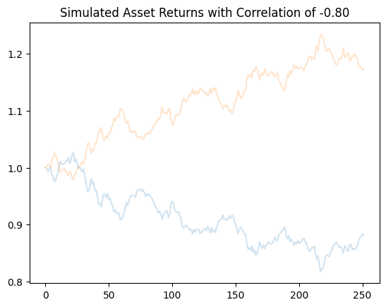
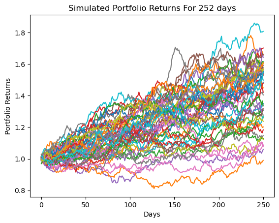

Monte Carlo and portfolios#
We saw how to simulate the price of an asset back when we looked at the price of Bitcoin and using the Nasdaq API. We are going to take a more complete look here at simulating correlated assets within a portfolio. These methods can be used for measuring portfolio risk, for simulating client portfolios in a financial planning setting, or pricing complex options like Asian options.
I am basing a lot of my code and discussion on this blog post.
This material is related to the Heston model for simulating the prices of correlated assets. The volatility of the assets are linked together. In the Heston model, the volatility of an asset today is also related to past volatility. We’ll do more on this when we get to GARCH models.
We’ll also use yfinance to bring in some stock prices from Yahoo! finance. You’ll need to run pip install yfinance in the terminal. You can read more about it here.
How correlation affects our simulations#
However, when we start to form portfolios, we are going to care about the correlations across assets. We’ve already seen this when looking at portfolio math. When simulating the Bitcoin prices, we took random numbers from the standard normal distribution and then scaled them by our estimate for the volatility of BTC. This allowed us to capture the randomness of the returns.
However, when dealing with more than one asset, we can’t do that, since the assets are not independent from one another. If Apple goes up, Google is more likely to have gone up as well. The two stocks are correlated. How can we account for this in our simulation? We will create correlated random shocks (\(W\)), where the random movement of one asset depends on another assets movement.
Let’s try a simulation to see what’s going on. I’ll draw two random variables from the standard normal distribution, N(0,1). The random part of the return for Asset 1, \(W_1\), is simply the random draw, \(x_1\). However, the random part of the return for Asset 2, \(W_2\), is correlated with whatever \(x_1\) ends up being. Mathematically, this dependent random movement is given as:
I’ll set the correlation, \(\rho\), to be -0.80. These two assets are negatively correlated, so they should move in opposite directions. We’ll set each asset to have the same mean return and same volatility. I’ll set the starting price of each of these assets to 1.
We’ll bring in our usual packages and try this out. This code should look a lot like the Bitcoin code, except that I now have two assets. I am only doing one simulation for each asset, so two total simulations.
How do we simulative prices? Let me remind you of a formula:
Take a starting price \(S_0\). We use exp for continuous compounding. Then, the price today, \(S_t\) is a function of two return sources. The first source is called drift: \(\mu - \frac{1}{2}\sigma^2\). This is what an asset returns on average over some period, like a day. This is the deterministic piece of the return and would be related to risk. \(\mu\) is the arithmetic average and \(\sigma\) is the volatility (standard deviation). They should be in the same units (e.g. daily).
The second piece of the return is the diffusion: \(\sigma W(t)\). \(W(t)\) is called a Brownian motion and is, essentially, cumulative random wiggles. You multiply by \(\sigma\) to scale it: more volatility, more wiggles.
\(dW\) denotes the random wiggle in just one period.
In this example, our random wiggles are going to be correlated across assets.
import datetime
import pandas as pd
import numpy as np
import matplotlib.pyplot as plt
# Include this to have plots show up in your Jupyter notebook.
%matplotlib inline
T = 251 # How long is our simulation? Let's do 252 days (0 to 251)
N = 251 # number of time points in the prediction time horizon, making this the same as T means that we will simulate daily returns
rho = -0.80 # Correlation between our two assets. Change me to get different patterns!
mu = 0.05/252 # Mean return (log). Using daily.
sigma = 0.12/np.sqrt(252) # Volatility of returns (standard deviation). Using daily.
drift = mu - 0.5 * sigma ** 2 # Drift is the same each day.
S_0 = 1 # Starting price
dt = T/N # One day price movements
dW = np.zeros([2, N]) # Set up random shocks with zeroes for now
# Sample two random variables from the standard normal distribution standard normal distribution. Two rows of 251 values from N(0,1).
X = np.random.normal(scale = np.sqrt(dt), size=(2, N))
# Generate correlated random shock, W.
dW[0] = X[0] # Same as first row in X
dW[1] = rho * X[0] + (1 - np.sqrt(rho**2)) * X[1] # Dependent on both sets of random values. How dependent? Correlation determines.
#An array containing the sum of random shocks for our assets.
W = np.cumsum(dW, axis=1)
diffusion = sigma * W # This is CUMULATIVE diffusion returns over time, rather than daily diffusion returns.
time_step = np.linspace(dt, T, N) # An array of 1, 2, 3, 4, 5..., keeping track of what time period we are in.
time_steps = np.broadcast_to(time_step, (2, N)) # An array of 1, 2, 3, 4, 5..., but for each asset.
# This is taking the drift (mu - 0.5 * sigma ** 2), which is the same each day, and multiplying it by 1 on Day 1, 2 on Day 2, 3 on Day 3, etc. Then, that term has sigma (volatility) * the cumulative shock added to it.
# Then, Staring Price * e^(r) = Price Today, since r is really a cumulative return.
S_t = S_0 * np.exp((drift) * time_steps + diffusion)
S_t = np.insert(S_t, 0, S_0, axis=1)
Let’s plot the two sets of cumulative returns to see if they make sense.
sims = pd.DataFrame(np.transpose(S_t))
# plotting
ax = sims.plot(alpha=0.2, legend=False)
ax.set_title('Simulated Asset Returns with Correlation of -0.80', fontsize=12);

You can really see the negative correlation!
Let’s move to some real data now. I am using yfinance to bring in price and volume data. I then keep just the adjusted closing prices for five stocks. Finally, I can calculate discrete returns and check my descriptives.
You can read more here: https://yfinance-python.org/reference/api/yfinance.download.html#yfinance.download
YFinance is not officially supported by Yahoo and is finicky to work with. StackOverflow says that his install method is best and that redoing it will fix issues that you might run into.
#pip install yfinance --upgrade --no-cache-dir
import yfinance as yf
---------------------------------------------------------------------------
TypeError Traceback (most recent call last)
Cell In[4], line 2
1 #pip install yfinance --upgrade --no-cache-dir
----> 2 import yfinance as yf
File ~/Documents/fin-data-analysis-text/.venv/lib/python3.9/site-packages/yfinance/__init__.py:26
24 from .lookup import Lookup
25 from .ticker import Ticker
---> 26 from .calendars import Calendars
27 from .tickers import Tickers
28 from .multi import download
File ~/Documents/fin-data-analysis-text/.venv/lib/python3.9/site-packages/yfinance/calendars.py:16
12 from .data import YfData
13 from .exceptions import YFException
---> 16 class CalendarQuery:
17 """
18 Simple CalendarQuery class for calendar queries, similar to yf.screener.query.QueryBase.
19
(...)
30 ```
31 """
33 def __init__(self, operator: str, operand: list[Any] | list["CalendarQuery"]):
File ~/Documents/fin-data-analysis-text/.venv/lib/python3.9/site-packages/yfinance/calendars.py:33, in CalendarQuery()
16 class CalendarQuery:
17 """
18 Simple CalendarQuery class for calendar queries, similar to yf.screener.query.QueryBase.
19
(...)
30 ```
31 """
---> 33 def __init__(self, operator: str, operand: list[Any] | list["CalendarQuery"]):
34 """
35 :param operator: Operator string, e.g., 'eq', 'gte', 'and', 'or'.
36 :param operand: List of operands: can be values (str, int), or other Operands instances (nested).
37 """
38 operator = operator.upper()
TypeError: unsupported operand type(s) for |: 'types.GenericAlias' and 'types.GenericAlias'
# Define start and end dates
start_date = datetime.datetime(2019, 1, 1)
end_date = datetime.datetime(2020, 1, 1)
# Define list of tickers
ticker_list = ["AAPL", "F", "CAG", "AMZN", "XOM"]
# Download adjusted close prices
stock_data = yf.download(ticker_list, start=start_date, end=end_date)
[*********************100%***********************] 5 of 5 completed
You can see the data here. This is a multi-index data frame. I am going to keep the Close. I’ll also calculate the returns. However, there’s a problem here. We have the closing price, but is it adjusted for splits and dividends? Typically, we see the Adjusted Close. However, I don’t see it here. I saw a comment online that it was removed in January 2025. I’ll just use the closing price for now.
See this for the difference: https://stackoverflow.com/questions/59799567/how-does-yahoo-finance-calculate-adjusted-close-stock-prices
stock_data
| Price | Close | High | ... | Open | Volume | ||||||||||||||||
|---|---|---|---|---|---|---|---|---|---|---|---|---|---|---|---|---|---|---|---|---|---|
| Ticker | AAPL | AMZN | CAG | F | XOM | AAPL | AMZN | CAG | F | XOM | ... | AAPL | AMZN | CAG | F | XOM | AAPL | AMZN | CAG | F | XOM |
| Date | |||||||||||||||||||||
| 2019-01-02 | 37.667191 | 76.956497 | 16.942211 | 5.748631 | 51.719875 | 37.889017 | 77.667999 | 17.124898 | 5.835953 | 51.853461 | ... | 36.944473 | 73.260002 | 16.791296 | 5.479392 | 49.983260 | 148158800 | 159662000 | 9529800 | 47494400 | 16727200 |
| 2019-01-03 | 33.915260 | 75.014000 | 17.124903 | 5.661311 | 50.925789 | 34.757238 | 76.900002 | 17.220218 | 5.814122 | 52.135478 | ... | 34.342211 | 76.000504 | 16.894559 | 5.799569 | 51.949943 | 365248800 | 139512000 | 8526000 | 39172400 | 13866100 |
| 2019-01-04 | 35.363071 | 78.769501 | 17.363192 | 5.879612 | 52.803398 | 35.432244 | 79.699997 | 17.704737 | 5.908719 | 52.892452 | ... | 34.473390 | 76.500000 | 17.228162 | 5.755908 | 51.682762 | 234428400 | 183652000 | 10307800 | 43039800 | 16043600 |
| 2019-01-07 | 35.284355 | 81.475502 | 17.720625 | 6.032424 | 53.077969 | 35.499026 | 81.727997 | 17.935084 | 6.090638 | 53.508412 | ... | 35.468017 | 80.115501 | 17.355252 | 5.901443 | 52.877593 | 219111200 | 159864000 | 7688400 | 40729400 | 10844200 |
| 2019-01-08 | 35.956985 | 82.829002 | 17.029587 | 6.090639 | 53.463898 | 36.212204 | 83.830498 | 17.649132 | 6.214343 | 53.872072 | ... | 35.673145 | 83.234497 | 17.569705 | 6.127023 | 53.834969 | 164101200 | 177628000 | 12699700 | 45644000 | 11439000 |
| ... | ... | ... | ... | ... | ... | ... | ... | ... | ... | ... | ... | ... | ... | ... | ... | ... | ... | ... | ... | ... | ... |
| 2019-12-24 | 68.823029 | 89.460503 | 27.924419 | 7.348588 | 54.453629 | 68.973140 | 89.778503 | 28.309868 | 7.364108 | 54.826921 | ... | 68.924716 | 89.690498 | 27.932622 | 7.325308 | 54.710267 | 48478800 | 17626000 | 2459600 | 11881600 | 3979400 |
| 2019-12-26 | 70.188499 | 93.438499 | 27.629185 | 7.333069 | 54.539158 | 70.205449 | 93.523003 | 28.047438 | 7.364108 | 54.826904 | ... | 68.956189 | 90.050499 | 27.850612 | 7.348589 | 54.585823 | 93121200 | 120108000 | 4672700 | 28961300 | 8840200 |
| 2019-12-27 | 70.161865 | 93.489998 | 28.031033 | 7.263229 | 54.352512 | 71.171444 | 95.070000 | 28.113041 | 7.340828 | 54.679139 | ... | 70.481445 | 94.146004 | 27.694792 | 7.333068 | 54.593593 | 146266000 | 123732000 | 2574400 | 28272800 | 10516100 |
| 2019-12-30 | 70.578285 | 92.344498 | 27.916222 | 7.177871 | 54.033661 | 70.861551 | 94.199997 | 28.072040 | 7.255470 | 54.780239 | ... | 70.079551 | 93.699997 | 27.981828 | 7.247710 | 54.508044 | 144114400 | 73494000 | 1813200 | 36074900 | 12689400 |
| 2019-12-31 | 71.093971 | 92.391998 | 28.080242 | 7.216671 | 54.266968 | 71.101234 | 92.663002 | 28.186853 | 7.239950 | 54.282525 | ... | 70.193342 | 92.099998 | 27.981828 | 7.177872 | 53.675924 | 100805600 | 50130000 | 2558500 | 32342100 | 13151800 |
252 rows × 25 columns
# Extract only the adjusted close prices
prices = stock_data['Close']
# Compute daily returns
rets = prices.pct_change().dropna()
rets
| Ticker | AAPL | AMZN | CAG | F | XOM |
|---|---|---|---|---|---|
| Date | |||||
| 2019-01-03 | -0.099607 | -0.025241 | 0.010783 | -0.015190 | -0.015354 |
| 2019-01-04 | 0.042689 | 0.050064 | 0.013915 | 0.038560 | 0.036870 |
| 2019-01-07 | -0.002226 | 0.034353 | 0.020586 | 0.025990 | 0.005200 |
| 2019-01-08 | 0.019063 | 0.016612 | -0.038996 | 0.009650 | 0.007271 |
| 2019-01-09 | 0.016982 | 0.001714 | -0.002799 | 0.041816 | 0.005275 |
| ... | ... | ... | ... | ... | ... |
| 2019-12-24 | 0.000951 | -0.002114 | 0.000882 | 0.003178 | -0.003841 |
| 2019-12-26 | 0.019840 | 0.044467 | -0.010573 | -0.002112 | 0.001571 |
| 2019-12-27 | -0.000379 | 0.000551 | 0.014544 | -0.009524 | -0.003422 |
| 2019-12-30 | 0.005935 | -0.012253 | -0.004096 | -0.011752 | -0.005866 |
| 2019-12-31 | 0.007307 | 0.000514 | 0.005875 | 0.005405 | 0.004318 |
251 rows × 5 columns
rets.describe()
| Ticker | AAPL | AMZN | CAG | F | XOM |
|---|---|---|---|---|---|
| count | 251.000000 | 251.000000 | 251.000000 | 251.000000 | 251.000000 |
| mean | 0.002671 | 0.000832 | 0.002271 | 0.001053 | 0.000257 |
| std | 0.016498 | 0.014382 | 0.022887 | 0.017158 | 0.011499 |
| min | -0.099607 | -0.053819 | -0.120982 | -0.074540 | -0.040289 |
| 25% | -0.004820 | -0.006649 | -0.008724 | -0.006961 | -0.006711 |
| 50% | 0.002768 | 0.001163 | 0.002338 | 0.000964 | 0.000694 |
| 75% | 0.011561 | 0.008535 | 0.013240 | 0.010034 | 0.007803 |
| max | 0.068335 | 0.050064 | 0.158692 | 0.107447 | 0.036870 |
Seems legit! The average daily returns are all positive, but around zero. The worst daily return is an Apple return of -9.96%. Each stock has a count of 251 daily returns over the course of the year.
OK, now it’s time to set up our simulation. We will do 50 different future portfolio paths. We’ll simulate 252 days worth of prices. We’ll use these prices to find returns.
We are simulating random numbers. But, computers cant really generate truly random numbers. We can set a seed value that will always generate the same set of random values.
mu has our arithmetic average returns.
We then find our usual variance-covariance matrix using .cov().
np.random.seed(1986)
T = 252 # How long is our simulation? Let's do 252 days.
N = 252 # number of time points in the prediction time horizon, making this the same as T means that we will simulate daily returns
N_SIM = 50 # How many simulations to run?
dt = T/N # daily steps
noa = 5 # Number of assets
weights = np.array(noa * [1. / noa,]) # EW portfolio based on number of assets. You can change this array to have any weights you want.
mu = rets.mean()
cov = rets.cov()
sigma = rets.std()
corr = rets.corr()
# initial matrix
port_returns_all = np.full((T-1, N_SIM), 0.) # One less return than price
We can look at the actual correlations among our assets to get a sense of what we are using to form portfolios.
corr
| Ticker | AAPL | AMZN | CAG | F | XOM |
|---|---|---|---|---|---|
| Ticker | |||||
| AAPL | 1.000000 | 0.592888 | 0.152908 | 0.305897 | 0.416555 |
| AMZN | 0.592888 | 1.000000 | 0.116090 | 0.364217 | 0.370256 |
| CAG | 0.152908 | 0.116090 | 1.000000 | 0.066561 | 0.160015 |
| F | 0.305897 | 0.364217 | 0.066561 | 1.000000 | 0.375396 |
| XOM | 0.416555 | 0.370256 | 0.160015 | 0.375396 | 1.000000 |
Let’s start with a simple case. We’ll simulate one series of returns for each of our assets, but include correlated shocks. We’ll get returns by actually simulating prices and then calculating returns.
The first line picks out he latest prices for each stock. This is where we will start. You could start each stock at $1 and get the same return result, since it’s the change that matters.
The second line is our math magic. This takes our variance-covariance matrix and does something called the Cholesky Decomposition. The variance-covariance matrix contains the information for how our assets move together (i.e. covariance). This method will allow us to use the correlation among our assets when simulating the random price paths. We want correlated assets to move together. You can read more about these methods here.
A is a \(5\times5\) matrix, just like the variance-covariance matrix, but the upper triangular part is all zeroes, while the lower triangular part still contains the dependencies among our assets.
S is 252 days of “empty” prices for our 5 assets. Why 252? We want our starting price plus 251 days of simulated prices. We’ll fill these in with simulated prices. We make the first price in the array equal to the latest price.
Then, we have a for loop that simulates prices for each asset across all 252 days. Ranges in Python start at and include the first, but stop one before the last number. Why do we start at 1? S[:, 0] are our initial prices. See how the fourth line has i-1. So, the first time through, it will use the starting price S[:,1-1], or S[:,0], to find the first simulated price S[:,1]. The loop will then go to 252 and stop one before, or 251. This gives us a starting price plus 251 daily simulated prices. Counting isn’t always easy!
We first calculate the drift, or deterministic component, of the return. This is based on the mean and standard deviation of the returns. dt is just 1 day in this case.
We then pull 5 random variables, one for each asset, from the standard normal distribution. We’ll call these 5 numbers Z.
If you multiply A and Z, then you get correlated standard normal variables, instead of five sets of random variables with no relationships among them.
The last line in the for loop is again how we simulate prices. I have done the drift (deterministic) and diffusion (random) terms separately to make it easier to see what’s going on. With this type of simulation, the stock price today is the stock price yesterday times \(\exp(\text{drift} + \text{diffusion})\). This is continuous compounding.
I take these prices and calculate returns again. But, these are now one set of simulated returns.
Finally, I take the returns and multiply them by our chosen weights to get a single set of portfolio returns.
S_0 = prices.iloc[-1]
A = np.linalg.cholesky(cov)
S = np.zeros([noa, N]) # Why N+1? We want our starting price + 252 days of prices.
S[:, 0] = S_0
for i in range(1, N):
drift = (mu - 0.5 * sigma**2) * dt # dt = 1. This is the deterministic part of the daily return. It's the same every day.
Z = np.random.normal(0., 1., noa) # Putting as period after a number in Python makes division work correctly when dealing with integers. Not sure we even need it here.
diffusion = np.matmul(A, Z) * np.sqrt(dt) # dt = 1. This is the random part.
S[:, i] = S[:, i-1]*np.exp(drift + diffusion) # S_t = S_t-1 * e^(r). Continuous compounding, where r is just that day's return, rather than a cumulative return.
R = pd.DataFrame(S.T).pct_change().dropna() # Create returns from those simulated prices.
port_rets = np.cumprod(np.inner(weights, R) + 1) # Weights x returns, cumulative product to get cumulative portfolio returns.
This method is coded up a bit differently from the two-asset and BTC example. There are no timesteps. Instead, dt = 1. Each previous stock return S_t-1 is being multiplied by a single daily return (drift+diffusion), rather than a cumulative return.
Hint
I recommend running each line separately and then looking at the resulting variable/array. This is how you can figure out what’s going on in the simulation.
Let’s check the correlations and descriptives for these simulated returns.
R.corr()
| 0 | 1 | 2 | 3 | 4 | |
|---|---|---|---|---|---|
| 0 | 1.000000 | 0.595471 | 0.266347 | 0.304453 | 0.501391 |
| 1 | 0.595471 | 1.000000 | 0.213023 | 0.387222 | 0.443719 |
| 2 | 0.266347 | 0.213023 | 1.000000 | 0.156465 | 0.257572 |
| 3 | 0.304453 | 0.387222 | 0.156465 | 1.000000 | 0.349658 |
| 4 | 0.501391 | 0.443719 | 0.257572 | 0.349658 | 1.000000 |
R.describe()
| 0 | 1 | 2 | 3 | 4 | |
|---|---|---|---|---|---|
| count | 251.000000 | 251.000000 | 251.000000 | 251.000000 | 251.000000 |
| mean | 0.001904 | 0.000292 | 0.000791 | 0.000038 | -0.000043 |
| std | 0.016625 | 0.014635 | 0.023678 | 0.017270 | 0.011896 |
| min | -0.045377 | -0.038192 | -0.067844 | -0.049063 | -0.034151 |
| 25% | -0.010133 | -0.008758 | -0.014598 | -0.011360 | -0.008491 |
| 50% | 0.001480 | -0.001245 | -0.000619 | 0.000610 | -0.000171 |
| 75% | 0.010484 | 0.010548 | 0.018418 | 0.012514 | 0.007760 |
| max | 0.045815 | 0.040962 | 0.061667 | 0.044706 | 0.032788 |
They seem to make sense! The simulated correlations, in particular, are close to the empirical correlations.
Finally, let’s add one more element to this loop. We can find 50 different portfolio returns by wrapping the code above in another for loop.
The first loop is counting a bit differently. Our first simulation is indexed at 0 in Python. We will go up to, but not include the number of simulations we are doing. So, 0 through 49. This gives us 50 total simulations.
Remember, the indentation matters! It tells us how the loops are nested.
S_0 = prices.iloc[-1]
A = np.linalg.cholesky(cov)
S = np.zeros([noa, N])
S[:, 0] = S_0
for t in range(0, N_SIM):
for i in range(1, N):
drift = (mu - 0.5 * sigma**2) * dt
Z = np.random.normal(0., 1., noa)
diffusion = np.matmul(A, Z) * np.sqrt(dt)
S[:, i] = S[:, i-1]*np.exp(drift + diffusion)
R = pd.DataFrame(S.T).pct_change().dropna()
port_rets = np.cumprod(np.inner(weights, R) + 1)
port_returns_all[:, t] = port_rets
I don’t claim that this is elegant code. I’m sure there’s a better way to do this via vectorization, without loops.
Let’s graph these 50 different portfolio paths to see what our future may hold.
port_returns_all = pd.DataFrame(port_returns_all)
plt.plot(port_returns_all)
plt.ylabel('Portfolio Returns')
plt.xlabel('Days')
plt.title('Simulated Portfolio Returns For 252 days');

That’s a large spread of possible cumulative portfolio returns over the year! This type of simulation is potentially useful for financial planners, and let’s you “answer” questions like, “What’s the probability that my portfolio falls below a particular level over the next decade?”. You can also use price paths like this to price certain options, where the value of the option depends on the paths that a basket of stocks took.